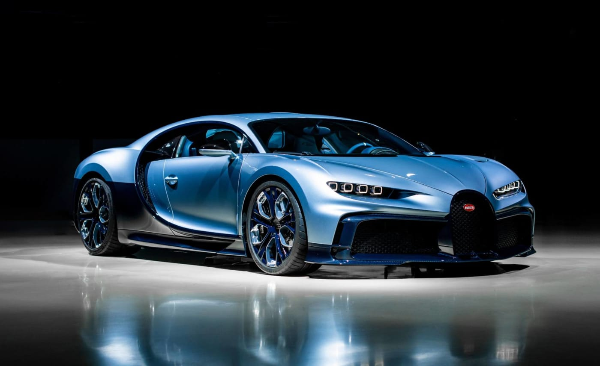

Bugatti Chiron
El Bugatti Chiron es un automóvil superdeportivo cupé de dos puertas biplaza, con motor central-trasero montado longitudinalmente y de tracción integral, diseñado y desarrollado por Bugatti Automobiles S.A.S., filial del Grupo Volkswagen. Fue presentado en el Salón del Automóvil de Ginebra 2016 como el sucesor del Bugatti Veyron.
Ferrari Enzo
El Ferrari Enzo es un automóvil superdeportivo berlinetta de dos puertas diédricas biplaza, producido por el fabricante italiano Ferrari entre 2002 y 2004. Inicialmente se pensó en una producción limitada de 349 unidades, pero en realidad se construyeron 400.